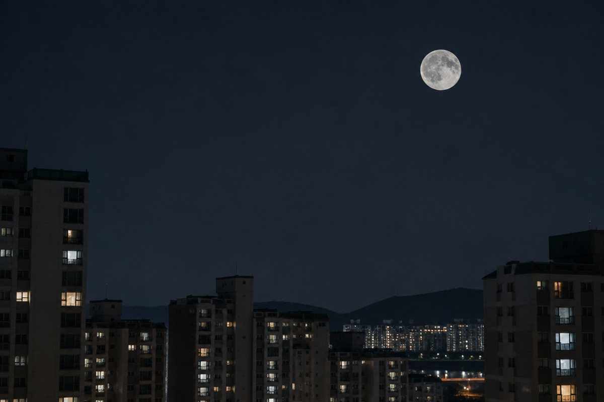

전체 단원 › 3학년 2학기 › 과학 › 지구와 달
지구와 달은 어떻게 생겼을까?

밤하늘의 둥근 달을 보면 토끼 모양 무늬가 보여요. 달은 어떤 곳일까요? 그리고 우리가 사는 지구는 어떤 모습일까요?
지구는 둥글어요
우주에서 찍은 사진을 보면 지구는 공처럼 둥근 모양이에요. 지구가 너무 커서 땅 위에 서 있는 우리에게는 평평해 보일 뿐이에요.
지구 표면에는 육지와 바다가 있는데, 바다가 육지보다 훨씬 넓어요. 바다가 지구 표면의 약 70%를 차지해요.
멀리서 다가오는 배는 꼭대기의 돛부터 보이기 시작하는데, 지구가 둥글기 때문이에요.
지구에는 공기와 물이 있어요
지구는 공기로 둘러싸여 있어요. 공기가 있어서 생물이 숨을 쉴 수 있고, 바람이 불고 구름이 생겨요.
또 지구에는 물이 있어 생물이 살아갈 수 있어요. 알맞은 온도, 공기, 물이 있어서 지구에는 많은 생물이 살아요.
달은 어떻게 생겼을까요?
달도 지구처럼 둥근 공 모양이에요. 크기는 지구보다 작아서 지름이 지구의 약 4분의 1이에요.
달 표면의 어둡게 보이는 넓은 곳을 '달의 바다'라고 하는데, 실제로 물이 있는 것은 아니에요. 또 달 표면에는 운석이 부딪쳐 생긴 움푹 파인 구덩이인 '충돌 구덩이(크레이터)'가 많아요.
보름달의 어두운 무늬(달의 바다)를 보고 옛사람들은 방아 찧는 토끼를 떠올렸어요.
지구와 달 비교하기
달에는 공기와 물이 없어요. 그래서 바람이 불지 않고, 생물이 살 수 없어요. 공기가 없어서 소리도 전해지지 않아요.
또 낮에는 아주 뜨겁고 밤에는 아주 차가워요. 지구는 공기와 물이 있어 생물이 살기에 알맞은 환경이에요.
달에 간 우주 비행사의 발자국은 바람이 없어서 오랫동안 그대로 남아 있어요.
핵심 낱말
- 육지
- 지구 표면에서 물로 덮이지 않은 땅
- 바다
- 지구 표면에서 짠물로 덮인 넓은 곳
- 공기
- 지구를 둘러싸고 있어 생물이 숨 쉴 수 있게 해 주는 기체
- 달의 바다
- 달 표면에서 어둡게 보이는 넓고 평평한 곳(물은 없음)
- 충돌 구덩이
- 운석이 부딪쳐 생긴 둥글게 움푹 파인 곳
한 줄 정리
- 지구는 둥글고, 바다가 육지보다 넓어요.
- 지구에는 공기와 물이 있어 생물이 살 수 있어요.
- 달은 둥글고 지구보다 작으며, 공기와 물이 없고 충돌 구덩이가 많아요.
학교 교육과정 연결
- [4과06-01] 지구가 대기로 둘러싸여 있음을 알고, 지구 표면을 구성하는 육지와 바다의 특징을 비교할 수 있다.
- [4과13-01] 달의 모양과 표면, 달의 위상변화를 관찰하여 밤하늘 관찰에 흥미를 가질 수 있다.